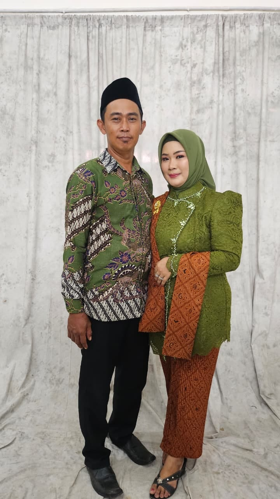

Menu Kami
Hidangan Istimewa
Hidangan Istimewa
Mbak Wiwin
Semua dibuat segar setiap hari dengan bahan-bahan berkualitas

Satu warung, dua andalan! Pempek kenyal cuko segar
dan seblak prasmanan pedas gurih — semua ada di sini!
Dibuat dari ikan segar pilihan dengan resep turun-temurun. Disajikan dengan cuko hitam pekat yang Pedas dan Nendang.
Colab
Seblak prasmanan dengan kuah kencur gurih yang menggugah selera. Pilih topping sesukamu — bebas dan puas!
🍢🌶️ Pempek + Seblak — Dua Dunia, Satu Warung, Tak Perlu Pilih!
Dimasak dengan
Cinta & Hati
Warung Pempek Memble Mbak Wiwin lahir dari kecintaan mendalam terhadap kuliner khas Palembang. Sejak pertama kali membuka lapak sederhana pada tahun 2012, Mbak Wiwin selalu menggunakan ikan segar pilihan dan resep turun-temurun yang telah teruji lezatnya.
Kata "Memble" sendiri adalah sebutan sayang dari pelanggan setia yang menggambarkan kelezatan pempek yang tak bisa dilupakan — kenyal di luar, lembut di dalam, dengan cuko yang pekat dan segar. Kini hadir pula Seblak Prasmanan sebagai kolaborasi andalan yang langsung jadi favorit baru!
Semua dibuat segar setiap hari dengan bahan-bahan berkualitas
Setiap hidangan dibuat dengan penuh semangat dan cinta
Pempek Kapal Selam
Model Ikan
Seblak Prasmanan
Es Campur
Suasana Warung
"Pempek kapal selamnya juara! Cuko-nya pas banget, nggak terlalu pedas. Kalau ke sini pasti nambah terus!"
"Es campurnya beneran seger banget! Cocok banget makan pempek sambil minum es campur di sini. Harganya juga terjangkau, recommended banget!"
"Seblak prasmanannya mantap! Bisa pilih topping sendiri, pedasnya bisa diatur juga. Mbak Wiwinnya juga ramah banget!"
"Memasak adalah cara saya berbagi kebahagiaan"
Mbak Wiwin, sosok perempuan tangguh yang telah menggeluti dunia kuliner selama lebih dari 14 tahun. Dengan keahlian memasak yang diasah sejak muda, beliau berhasil menciptakan cita rasa pempek yang khas dan selalu dirindukan pelanggan.
Bagi Mbak Wiwin, warung ini bukan sekadar bisnis — ini adalah tempat berbagi kebahagiaan melalui makanan yang dibuat dari hati. Setiap hari beliau hadir langsung untuk memastikan kualitas dan kehangatan pelayanan terjaga.

Menerima pemesanan & order pesanan untuk acara melalui WhatsApp!
📲 Chat WhatsApp Sekarang📲 +62 0851-2495-8328